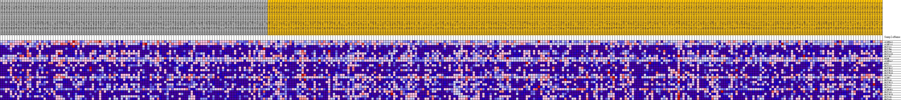
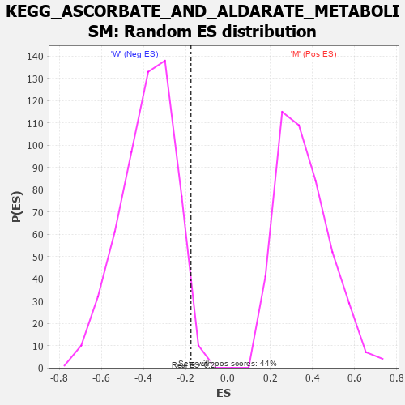

Profile of the Running ES Score & Positions of GeneSet Members on the Rank Ordered List
| Dataset | MUC16.MUC16.cls#M_versus_W.MUC16.cls#M_versus_W_repos |
| Phenotype | MUC16.cls#M_versus_W_repos |
| Upregulated in class | W |
| GeneSet | KEGG_ASCORBATE_AND_ALDARATE_METABOLISM |
| Enrichment Score (ES) | -0.17699987 |
| Normalized Enrichment Score (NES) | -0.46032307 |
| Nominal p-value | 0.9821109 |
| FDR q-value | 1.0 |
| FWER p-Value | 1.0 |
| PROBE | DESCRIPTION (from dataset) | GENE SYMBOL | GENE_TITLE | RANK IN GENE LIST | RANK METRIC SCORE | RUNNING ES | CORE ENRICHMENT | |
|---|---|---|---|---|---|---|---|---|
| 1 | ALDH9A1 | na | 745 | 0.164 | 0.0791 | Yes | ||
| 2 | ALDH7A1 | na | 1791 | 0.122 | 0.1293 | Yes | ||
| 3 | UGT2A1 | na | 4182 | 0.080 | 0.1311 | Yes | ||
| 4 | UGT2B4 | na | 5406 | 0.065 | 0.1457 | Yes | ||
| 5 | UGT1A8 | na | 8001 | 0.041 | 0.1220 | Yes | ||
| 6 | UGT1A10 | na | 8888 | 0.034 | 0.1250 | Yes | ||
| 7 | UGT2B7 | na | 8891 | 0.034 | 0.1441 | Yes | ||
| 8 | UGDH | na | 8922 | 0.033 | 0.1624 | Yes | ||
| 9 | ALDH3A2 | na | 10048 | 0.024 | 0.1558 | No | ||
| 10 | MIOX | na | 11760 | 0.013 | 0.1320 | No | ||
| 11 | UGT1A1 | na | 12367 | 0.009 | 0.1258 | No | ||
| 12 | UGT2B17 | na | 12884 | 0.005 | 0.1194 | No | ||
| 13 | UGT2B15 | na | 21507 | -0.032 | -0.0186 | No | ||
| 14 | UGT2B10 | na | 25201 | -0.047 | -0.0589 | No | ||
| 15 | UGT1A9 | na | 25853 | -0.049 | -0.0428 | No | ||
| 16 | ALDH2 | na | 27469 | -0.055 | -0.0408 | No | ||
| 17 | UGT1A6 | na | 31720 | -0.069 | -0.0786 | No | ||
| 18 | UGT2B11 | na | 33054 | -0.074 | -0.0610 | No | ||
| 19 | UGT1A3 | na | 34280 | -0.078 | -0.0394 | No | ||
| 20 | UGT1A7 | na | 41884 | -0.102 | -0.1193 | No | ||
| 21 | ALDH1B1 | na | 42802 | -0.105 | -0.0764 | No | ||
| 22 | UGT2A3 | na | 46727 | -0.121 | -0.0790 | No | ||
| 23 | UGT2B28 | na | 48122 | -0.128 | -0.0319 | No | ||
| 24 | UGT1A4 | na | 50316 | -0.142 | 0.0085 | No | ||
| 25 | UGT1A5 | na | 50543 | -0.143 | 0.0855 | No |

